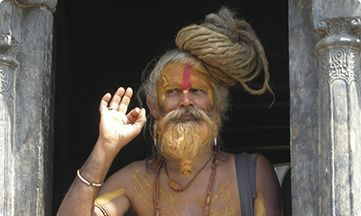

Регион
Треккинг к базовому лагерю Аннапурны-1
Потрясающие виды ждут вас!
Формат тура
Треккинг
Проживание
Отели и гестхаусы
Питание
Местные кафе
Транспорт
Самолет и авто
Сопровождение
Опытный гид
Безопасность
Надежная страховка
ГДЕ И КОГДА
Вид туризма
Горы, Треккинг
Сложность
Средняя
Длительность тура
16 ноября — 17 декабря
БЛИЖАЙШИЕ ЗАЕЗДЫ
16 ноября — 17 декабря
5 свободных мест
16 ноября — 17 декабря
12 свободных мест
16 ноября — 17 декабря
12 свободных мест
16 ноября — 17 декабря
12 свободных мест
16 ноября — 17 декабря
12 свободных мест
16 ноября — 17 декабря
12 свободных мест
16 ноября — 17 декабря
12 свободных мест
16 ноября — 17 декабря
12 свободных мест
Вас ждет
Трек вокруг Аннапурны – интереснейший пеший маршрут, входящий в десятку лучших теккинговых маршрутов мира.
В процессе этого путешествия вы увидите великолепные пейзажи снежных гималайских вершин: все Аннапурны – Аннапурна I (8091 м), Аннапурна II (7937 м), Аннапурна III (7555 м), Аннапурна IV (7525 м), Южная Аннапурна (7273 м); Дхаулагири (8167 м), Нилгири (7061 м), Манаслу (8163 м), Манаслу II (7879 м).
Маршрут трека вокруг Аннапурны проходит через разнообразнейшие ландшафты: низкогорья с террасами рисовых полей и пастбищ, которые время от времени сменяются бамбуковыми зарослями и влажными субтропическими лесами, где весной цветут роскошные алые рододендроны и белые магнолии; скалы и ущелья, покрытые лиственными и хвойными лесами; долины рек Марсьянгди и Сабдже, засушливый регион Мананг.
7 причин поехать
1
Трек вокруг Аннапурны — один из популярнейших в мире треккинговых маршрутов.
2
Трек не требует специальной технической и физической подготовки.
3
Тур богат фантастическими видами на Гималаи.
4
На маршруте участников сопровождает опытный гид от Команды Приключений Альпиндустриия.
5
Во время трека вокруг предстоит увидеть буддийские ступы, монастыри, «говорящие камни» с мантрами.
6
Местами маршрут проходит через сказочные леса, звенящие водопады, горячие источники.
7
Участие в туре дает право на приобретение одежды и снаряжения с 20%, скидкой в нашем экипировочном центре на Первомайской.
Описание тура по дням

День 1. Прибытие в Катманду
Добро пожаловать в гималайскую страну Непал! Встреча с гидом в аэропорту Трибхуван, размещение в отеле 4* в Катманду. Экскурсия с гидом в Сваямбунатх - маленький городок из буддийских храмов, монастырей и индуистских религиозных сооружений. С вершины холма, где расположен Сваямбунатх, открывается великолепная панорама долины Катманду — красочной зеленой котловины, окруженной величественными горными вершинами. Остаток дня отдых в отеле и ужин в ресторане национальной кухни. Ночь в отеле 3*.
день 2. ИЗ КАТМАНДУ К ЧАМДЖЕ (1430 м)
Добро пожаловать в гималайскую страну Непал! Встреча с гидом в аэропорту Трибхуван, размещение в отеле 4* в Катманду. Экскурсия с гидом в Сваямбунатх - маленький городок из буддийских храмов, монастырей и индуистских религиозных сооружений. С вершины холма, где расположен Сваямбунатх, открывается великолепная панорама долины Катманду — красочной зеленой котловины, окруженной величественными горными вершинами. Остаток дня отдых в отеле и ужин в ресторане национальной кухни. Ночь в отеле 3*.
день 3. ПРИБЫТИЕ В КАТМАНДУ
Подъем в 6:30 - 7:00 утра. Горная тропа поднимается к долине Тал, постоянно следуя течению реки Маршангди. Сегодня предстоит пройти через густой лес бамбука и рододендрона, и войти в район Мананг. Место сегодняшней ночевки — Дарапани, типичная тибетская деревня (1920 м). 5-6 часов в пути. Останавливаемся на ночь в гест-хаусе.
день 4. ТРЕК ИЗ ДАРАПАНИ К ЧАМЕ (2630 м)
Подъем в 6:30 - 7:00 утра. Горная тропа поднимается к долине Тал, постоянно следуя течению реки Маршангди. Сегодня предстоит пройти через густой лес бамбука и рододендрона, и войти в район Мананг. Место сегодняшней ночевки — Дарапани, типичная тибетская деревня (1920 м). 5-6 часов в пути. Останавливаемся на ночь в гест-хаусе.
Стоимость тура от 42 000 руб.
в СТОИМОСТЬ ТУРА ВХОДИТ:
- Перемещение по городу на частном транспорте (все дни, за исключением 14-го дня программы).
- Местный англоговорящий гид на время трека.
- Англоговорящий гид на время экскурсий в Катманду и Покхаре.
- Размещение в отеле 3** в Катманду. (Двухместные номера). Завтрак включен.
- Трансферы между регионами на частном автотранспорте (предусмотрен для группы 6 и более 7 человек). Для группы 2-5 человек с местным гидом — переезды между регионами на рейсовых автобусах.
- Размещение в лоджиях и гестхаусах на треке.
- Пермит и TIMS-карта.
- Праздничный ужин в Катманду в 1-ый день программы.
- Перелет Джомсом - Покхара.
в СТОИМОСТЬ ТУРА НЕ ВХОДИТ:
- Авиабилет в Катманду (от 27 000 руб)
- Виза Непала (40$)
- Медицинская страховка (48$)
- Еда и напитки в Катманду ($10-25 за обед)
- Снаряжение, одежда для трека
- Аэропортовый сбор в Джомсоме (2 $)
- Доплата за одноместное размещение 295 $
- Питание в Покхаре (10 - 25 $)
- Портеры для переноски грузов (при желании). 16 $ за портера.
- Трансферы по городу в 14 день программы.
- Прокат лодки на озере Фева (5$ за лодку).
- Экскурсии в Покхаре (по желанию).
- Входные билеты и экскурсии в Катманду.
Что нужно взять с собой?
Скорее всего, ты один из нас:
- Тебе надоело ездить в скучные пакетные туры, лежать на пляже рядом с бассейном и ничего не делать, тебе хочется отдыхать активно, пробовать новое, не сидеть на месте, общаться с интересными людьми и открывать мир.
- Ты давно хотел попробовать какой-нибудь активный вид спорта, пересмотрел целую кучу видео на Ютюбе, Вконтакте и Вимео.
- Тебе хочется лезть на скалы, прыгать с парашютом, ходить по хайлайну, растянутому над пропастью, прыгать с тарзанки и быть «крутым перцем».
- Ты любишь ездить в Боровое, но уже все там знаешь: Слона видел, на Синюху ходил, на лодке по озеру катался.
- Хочешь съездить в Боровое, но при этом как-то по-новому провести время.
ФОТО ИЗ ПРОШЛЫХ ПУТЕШЕСТВИЙ
- Тибетские молитвеные флаги на ветру
- Весна в Тибете
- Як на горном склоне
- Горный массив и долина реки
- Утро в горах
ВИДЕО О ПУТЕШЕСТВИИ
ОТЗЫВЫ О НАШИХ ПУТЕШЕСТВИЯХ
-

Константин Константинопольский
37 лет, МоскваЗдесь забываешь, что прошел 160 км, что три дня колбасился в пылюке автобуса. Тут все по-непальски — и плохо и хорошо (Шредингеру привет).
Рискуя показаться расистом, я все же хочу сказать — непальцы — относительно большие дети. Тотальный, всепоглощающий инфантилизм в самых ярких проявлениях. Они по-дестки обижаются, если закажешь у них в кафешке мало еды. Как они мило пьянеют от стаканчика яблочного сидра (жуткого на вкус, кстати). Как раздолбайски организовывают всё, что касается их жизни. Но как настоящие школьные отличники они очень добрые и отзывчивые.
Непал ты любишь и ненавидишь одновременно, но горы... ГОРЫ, которые мы видели; воздух, которым дышали; миллионы шагов, которые сделали за эти 20 дней - все они навсегда останутся в памяти, как самое невероятное, что я когда либо видел, ощущал и делал.
Я запомню Непал, как место, где наша матушка Земля по-настоящему ВПЕЧАТЛЯЕТ!
-
Аркадий Григорьев
45 лет, КалининградНепал ты любишь и ненавидишь одновременно, но горы... ГОРЫ, которые мы видели; воздух, которым дышали; миллионы шагов, которые сделали за эти 20 дней - все они навсегда останутся в памяти, как самое невероятное, что я когда либо видел, ощущал и делал.
Я запомню Непал, как место, где наша матушка Земля по-настоящему ВПЕЧАТЛЯЕТ!
Здесь забываешь, что прошел 160 км, что три дня колбасился в пылюке автобуса. Тут все по-непальски — и плохо и хорошо (Шредингеру привет).